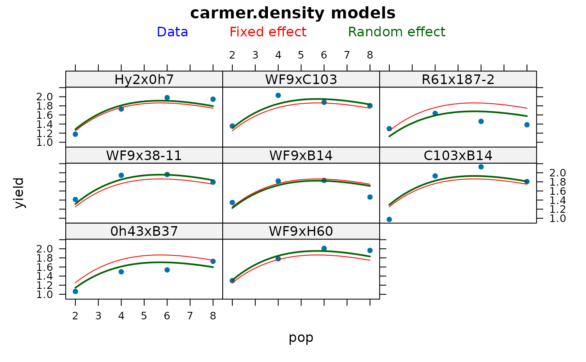

Nonlinear maize yield-density model
carmer.density.RdNonlinear maize yield-density model.
Format
A data frame with 32 observations on the following 3 variables.
gengenotype/hybrid, 8 levels
poppopulation (plants)
yieldyield, pounds per hill
Details
Eight single-cross hybrids were in the experiment–Hy2xOh7 and WF9xC103 were included because it was believed they had optimum yields at relatively high and low populations. Planted in 1963. Plots were thinned to 2, 4, 6, 8 plants per hill, giving densities 8, 16, 24, 32 thousand plants per acre. Hills were in rows 40 inches apart. One hill = 1/4000 acre. Split-plot design with 5 reps, density is main plot and subplot was hybrid.
Source
S G Carmer and J A Jackobs (1965). An Exponential Model for Predicting Optimum Plant Density and Maximum Corn Yield. Agronomy Journal, 57, 241–244. https://doi.org/10.2134/agronj1965.00021962005700030003x
Examples
library(agridat)
data(carmer.density)
dat <- carmer.density
dat$gen <- factor(dat$gen, levels=c('Hy2x0h7','WF9xC103','R61x187-2',
'WF9x38-11','WF9xB14','C103xB14',
'0h43xB37','WF9xH60'))
# Separate analysis for each hybrid
# Model: y = x * a * k^x. Table 1 of Carmer and Jackobs.
out <- data.frame(a=rep(NA,8), k=NA)
preds <- NULL
rownames(out) <- levels(dat$gen)
newdat <- data.frame(pop=seq(2,8,by=.1))
for(i in levels(dat$gen)){
print(i)
dati <- subset(dat, gen==i)
mi <- nls(yield ~ pop * a * k^pop, data=dati, start=list(a=10,k=1))
out[i, ] <- mi$m$getPars()
# Predicted values
pi <- cbind(gen=i, newdat, pred= predict(mi, newdat=newdat))
preds <- rbind(preds, pi)
}
#> [1] "Hy2x0h7"
#> [1] "WF9xC103"
#> [1] "R61x187-2"
#> [1] "WF9x38-11"
#> [1] "WF9xB14"
#> [1] "C103xB14"
#> [1] "0h43xB37"
#> [1] "WF9xH60"
# Optimum plant density is -1/log(k)
out$pop.opt <- -1/log(out$k)
round(out, 3)
#> a k pop.opt
#> Hy2x0h7 0.782 0.865 6.875
#> WF9xC103 1.039 0.825 5.192
#> R61x187-2 0.998 0.798 4.441
#> WF9x38-11 1.042 0.825 5.203
#> WF9xB14 1.067 0.806 4.647
#> C103xB14 0.813 0.860 6.653
#> 0h43xB37 0.673 0.862 6.740
#> WF9xH60 0.858 0.854 6.358
## a k pop.opt
## Hy2x0h7 0.782 0.865 6.875
## WF9xC103 1.039 0.825 5.192
## R61x187-2 0.998 0.798 4.441
## WF9x38-11 1.042 0.825 5.203
## WF9xB14 1.067 0.806 4.647
## C103xB14 0.813 0.860 6.653
## 0h43xB37 0.673 0.862 6.740
## WF9xH60 0.858 0.854 6.358
# Fit an overall fixed-effect with random deviations for each hybrid.
libs(nlme)
m1 <- nlme(yield ~ pop * a * k^pop,
fixed = a + k ~ 1,
random = a + k ~ 1|gen,
data=dat, start=c(a=10,k=1))
# summary(m1) # Random effect for 'a' probably not needed
libs(latticeExtra)
# Plot Data, fixed-effect prediction, random-effect prediction.
pdat <- expand.grid(gen=levels(dat$gen), pop=seq(2,8,length=50))
pdat$pred <- predict(m1, pdat)
pdat$predf <- predict(m1, pdat, level=0)
xyplot(yield~pop|gen, dat, pch=16, as.table=TRUE,
main="carmer.density models",
key=simpleKey(text=c("Data", "Fixed effect","Random effect"),
col=c("blue", "red","darkgreen"), columns=3, points=FALSE)) +
xyplot(predf~pop|gen, pdat, type='l', as.table=TRUE, col="red") +
xyplot(pred~pop|gen, pdat, type='l', col="darkgreen", lwd=2)
